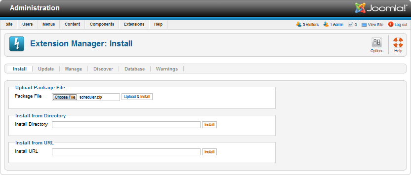
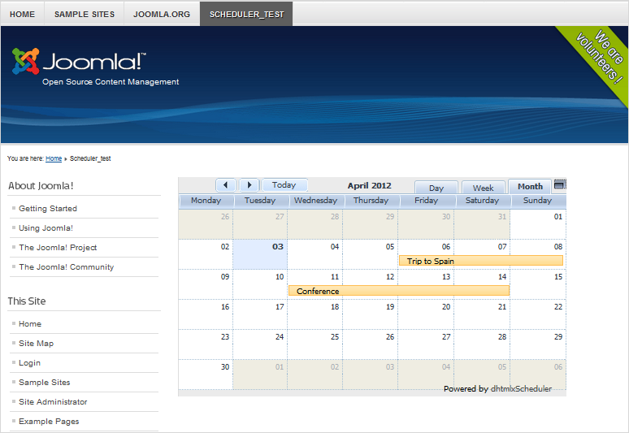

dhtmlxScheduler for Joomla!
To use the Scheduler plugin in Joomla you should perform the following actions:
- ;
- .
Download links:
What's new? Version 3.0
The release 3.0 brought a number of new features to the Scheduler plugins: has fixed all bugs and problems detected since the previous version, improved the security aspects and added new configuration options.
New features:
- Import/Export to Google Calendar.
- 2 new available views: Week agenda and Map view.
- Support of custom users groups.
- The possibility to hide columns in the Unit view.
- Special template providing the name of the event author.
- The possibility to show the second scale in the Timeline view.
- Skin styling. You can set any color scheme for your scheduler.
- Button Print to PDF. Now you needn't to add any additional files, just enable the related option on the control panel and the button invoking export will be added to the sheduler.
- Button Export to iCal. It also allows you to provide export with none extra files added.
Installing and activating the plugin
Joomla offers the following way of installing and activating the plugin to your article:
- Download the Scheduler package to your local machine as a zip file;
- From the Administration panel click on the Extensions tab. A dropdown list will appear;
- In the dropdown list select Extension Manager;
- From the tab, click the button Browse and choose the directory to your plugin package in the opened browse window;
- Click the button Upload & Install.

Once Scheduler has been installed, it will be activated automatically.
Using the plugin
Please note, the following users groups can edit Scheduler:
- Super user (Super administrator before 1.6 version);
- Administrator;
- Manager.
To add Scheduler to an article you should follow the next steps:
- From the Administration panel click on the Menus tab. A dropdown list will appear;
- With the help of the dropdown list, add a new menu item to the desired place. For example, select Top→Add New Menu Item.
- In opened page Menu Manager: New Menu Item, fill in field Menu Item Type: click button Select and select Scheduler→Link to Scheduler page.
- Set any other desired configuration options, and click button Save. A new page with Scheduler will be added to the site.

Configuration
Scheduler can be configured through the admin panel available from the Components tab (the Scheduler entry). Read more on the topic in article Universal plugin control panel.